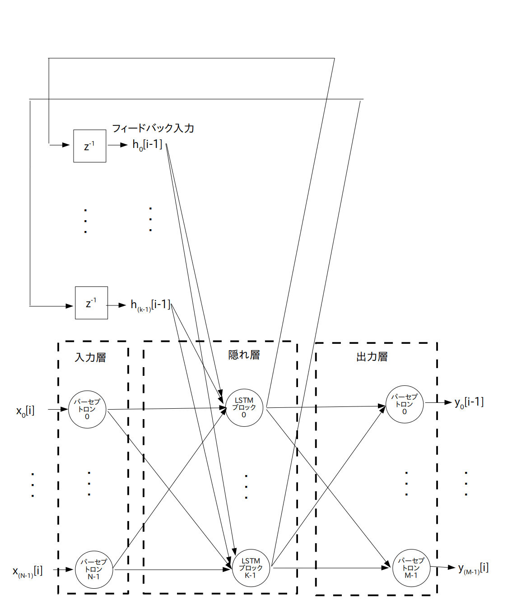
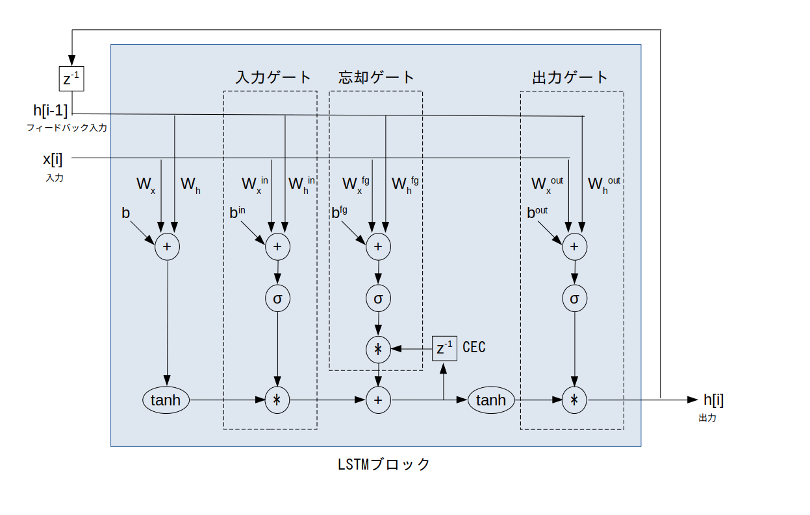

$z^{-1}$ ・・・ 1時刻遅延素子
LSTM (Long Short Term Memory: 長・短期記憶)とはRNN (Recurrent Neural Network: 回帰型ニューラルネットワーク)の一種ですので、最初に RNN について説明します。
なお今回は話を簡単にするために 3 層 RNN だけを考えます。
まずニューラルネットワークの入力層への入力信号として、以下の様な N 個の長さ S のシーケンス、つまり時間領域ディジタル信号を考えます。
※ これまで学んできたMLPやCNNには時間の概念が無いことに注意して下さい
ところで自己相関関数のアクティビティで学んだように、ある時刻における信号値はそれ以前の信号値と強い相関を持っていることが多いです。
よってニューラルネットワークに入力された信号値をネットワーク内でフィードバックして再利用することでネットワークのパラメータ数を減らすことが出来るはずです。
その様な考えのもとで開発されたのが RNN です。
では基本的な RNN のネットワーク構成図を図 1 に示します。
この図の様に RNN はMLPの隠れ層の出力を入力側にフィードバックさせている構成となっています。
つまり各時刻 $i$ において N 個の入力 $x_0[i], \cdots, x_{(\textrm{N}-1)}[i]$、 および隠れ層からの K 個の フィードバック入力 $h_0[i-1], \cdots, h_{(\textrm{k}-1)}[i-1]$ が隠れ層に入力され、出力層から M 個の出力信号 $y_0[i] \cdots y_{(\textrm{M}-1)}[i]$ が出力されます。
$z^{-1}$ ・・・ 1時刻遅延素子
※ LSTMについてはこちらのサイトの説明が分かりやすいです
ところが RNN には隠れ層への入力($x_0[i], \cdots, x_{(\textrm{N}-1)}[i]$ および $h_0[i-1], \cdots, h_{(\textrm{k}-1)}[i-1]$)にかけられる重みの学習が不安定であるという問題があります。
そこで RNN を改良した LSTM が開発されました。
LSTM のネットワーク構成図を図 2 に示します。
RNN との違いは隠れ層のユニットとしてパーセプトロンの代わりに「LSTMブロック」を使っているところだけです。

$z^{-1}$ ・・・ 1時刻遅延素子
この LSTM ブロックの内部は図 3 の様になっています。
なおこの図では分かりやすいように1入力・1フィードバック入力としていますが、多入力・多フィードバック入力の場合も同様に考えられます。

$z^{-1}$ ・・・ 1時刻遅延素子
$\sigma$ ・・・ シグモイド関数
CEC ・・・ Constant Error Carousel : 定誤差カルーセル
$w_x$ ・・・ 入力部において入力信号に掛けられる重み
$w_h$ ・・・ 入力部においてフィードバック入力信号に掛けられる重み
$b$ ・・・ 入力部のバイアス
$w_x^{\textrm in}$ ・・・ 入力ゲートにおいて入力信号に掛けられる重み
$w_h^{\textrm in}$ ・・・ 入力ゲートにおいてフィードバック入力信号に掛けられる重み
$b^{\textrm in}$ ・・・ 入力ゲートのバイアス
$w_x^{\textrm fg}$ ・・・ 忘却ゲートにおいて入力信号に掛けられる重み
$w_h^{\textrm fg}$ ・・・ 忘却ゲートにおいてフィードバック入力信号に掛けられる重み
$b^{\textrm fg}$ ・・・ 忘却ゲートのバイアス
$w_x^{\textrm out}$ ・・・ 出力ゲートにおいて入力信号に掛けられる重み
$w_h^{\textrm out}$ ・・・ 出力ゲートにおいてフィードバック入力信号に掛けられる重み
$b^{\textrm out}$ ・・・ 出力ゲートのバイアス
LSTM の肝となるのが「CEC(Constant Error Carousel : 定誤差カルーセル)」と呼ばれる内部ユニットです。
カルーセルとは日本語で言うとメリーゴーラウンドや回転木馬という意味です。
RNNの学習が不安定な原因は「過去に入力した信号の情報がフィードバックを繰り返す(つまり何度もtanhに通される)ことによって徐々に消滅していくこと」なので、CECを導入することによって過去に入力した信号の情報をLSTMブロック内で長期的に記憶し、短期的な情報であるフィードバック入力と足し合わせることにしました。
※ これが「LSTM：長・短期記憶」の語源となっています
ただこのままだと入力信号の傾向が代わっても古い情報を CEC は記憶し続けてしまいます。
そこで「忘却ゲート」を導入して、もし入力信号の傾向が代わったら CEC をリセットすることにしました。
ついでに「入力ゲート」と「出力ゲート」も導入し、入力信号の傾向が代わったら入力や出力を行わないように改良を加えました。
この様に、LSTM は CEC と入力・忘却・出力の3つのゲートを導入することで安定して重みの学習を行えるようになっています。